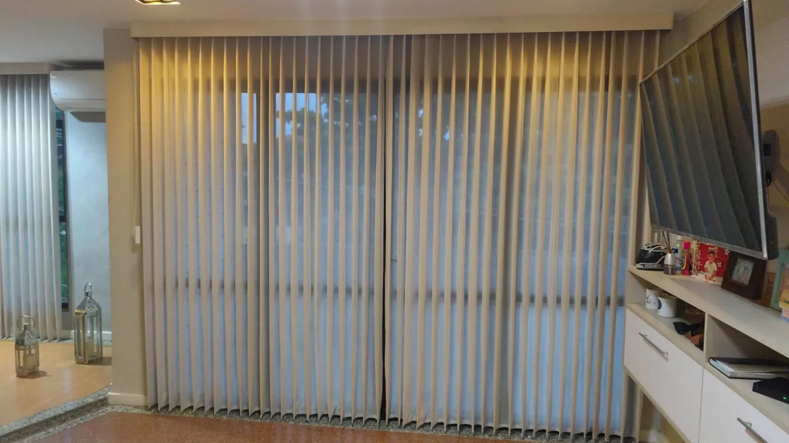

Troca de cabos e fitas
Substituição de cabos partidos, fitas, molas e recolhedores para recuperar o funcionamento do estore.
Pedir orçamentoReparação, manutenção e substituição de estores e persianas em Lisboa. Soluções práticas para voltar a ter conforto, privacidade e tranquilidade em casa.
Atendimento aos fins de semana e feriados mediante disponibilidade e marcação.

Desde uma pequena reparação até à substituição de componentes, ajudamos a encontrar a solução adequada.
Substituição de cabos partidos, fitas, molas e recolhedores para recuperar o funcionamento do estore.
Pedir orçamentoApoio na reparação e substituição de motores elétricos de estores, com avaliação do problema.
Pedir orçamentoTroca de réguas partidas ou desencaixadas e substituição completa de estores quando necessário.
Pedir orçamentoManutenção e higienização de estores e persianas para conservar o aspeto e o funcionamento.
Pedir orçamentoVeja algumas fotografias de trabalhos realizados. Toque numa imagem para ampliar.
Precisa de resolver um problema num estore, mas só está disponível ao sábado, domingo ou feriado? Entre em contacto e combine uma visita técnica conforme a disponibilidade.
Possibilidade de atendimento por marcação, sujeito a confirmação.
Proximidade e contacto direto para combinar a visita.
Explique a avaria e, se possível, envie fotografias pelo WhatsApp.
R. Santo André 9, Pontinha, 1675-174 Lisboa
Envie-nos uma mensagem, descreva o problema e peça uma avaliação.
Falar com o Marco agora